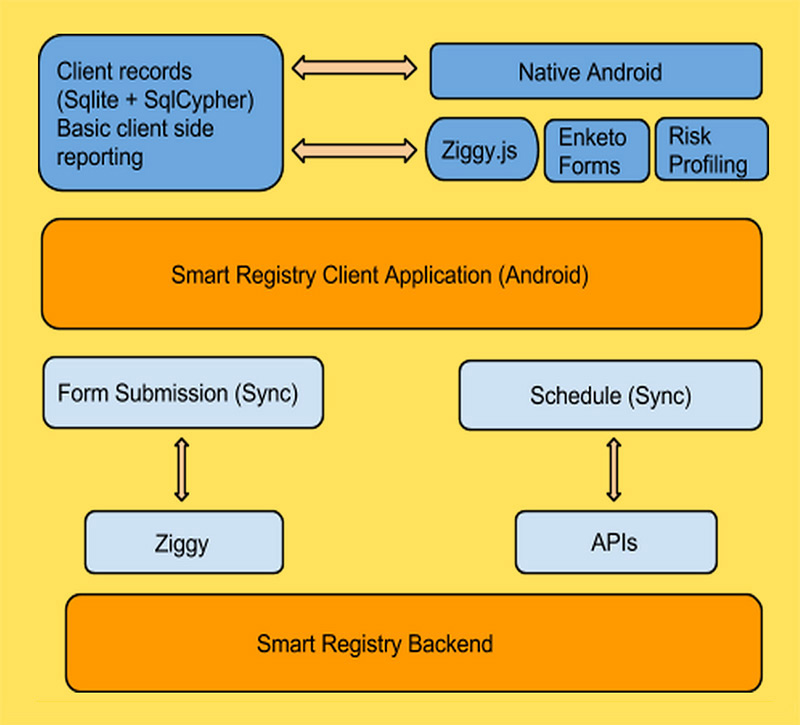
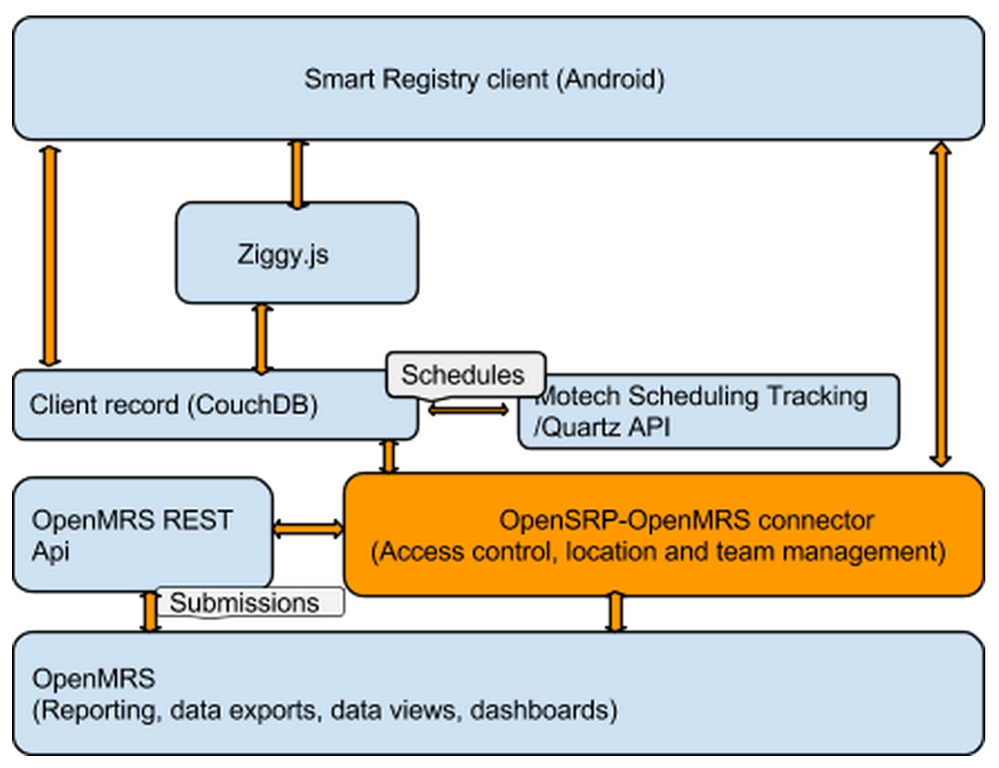

The OpenSRP client (Android application) code lives in a Git repository. The README file includes instructions to setup the system and also contains the public credentials for testing the application.
A brief overview of the technologies used in the OpenSRP Client:

Standard Android application that hosts the client record store, ziggy, Enketo HTML5 forms, and webviews via android native in addition to the ability to synchronize to the Smarty Register backend.
Client records are stored in SQLite and then encrypted with SqlCypher for basic aggregate reporting.
The Smart Register UI is done with Android native code. This makes development of new UI components very quick.
Ziggy.js maps client data from the model into forms, i.e., it picks both mother and child information, inserts it into a PNC form, maps form submissions to the client record, and processes submissions received from the server.
Enketo HTML5 forms are authored from XLSForms in Ona. Using HTML5 removes the Javarosa dependency. To be saved in OpenMRS, all concepts from the client have the corresponding concept UUID.
Custom logic authored in the XLSForms evaluates patient risk as client information comes in and shows an alert if patients are at high risk.
OpenSRP server code lives in a Git repository. The README file includes instructions to setup the system and the public credentials for testing the app.
The OpenSRP server runs CouchDB - a document-oriented NoSQL database system that uses JSON to store data. All data collected from the client and stored on CouchDB is also stored in OpenMRS; at this point, we leverage the excellent and robust functionalities of OpenMRS including reporting, querying etc.
A brief overview of the technologies used in the OpenSRP Server:

OpenSRP uses the Motech library for scheduling as follows:
Client records stored in a simple CouchDB database and in OpenMRS.
User authentication, location and team mapping modules reside in OpenMRS and are used by the OpenSRP client.
Ziggy submissions are replayed in a Rhino JS server. This recreates client records that had been on the Android client.
OpenMRS is a patient-centric, widely used medical record system. OpenSRP uses OpenMRS to view registries and reports and fetch data from its REST API.